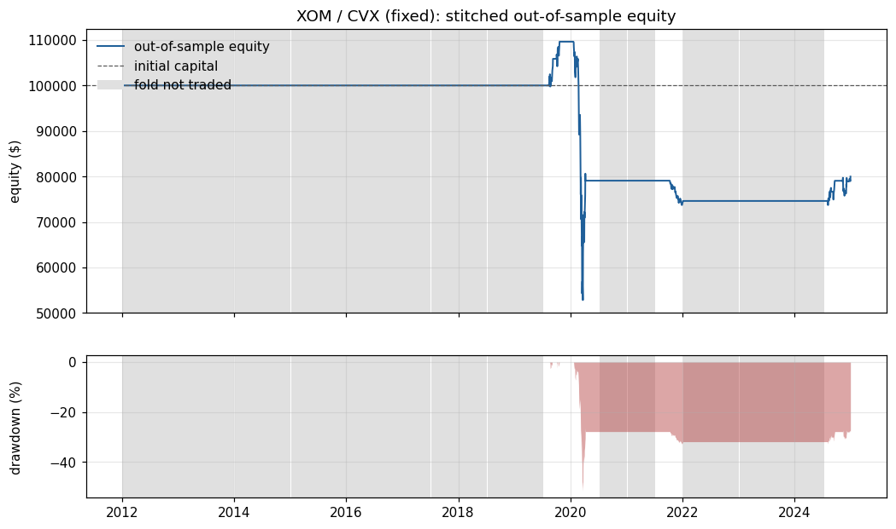
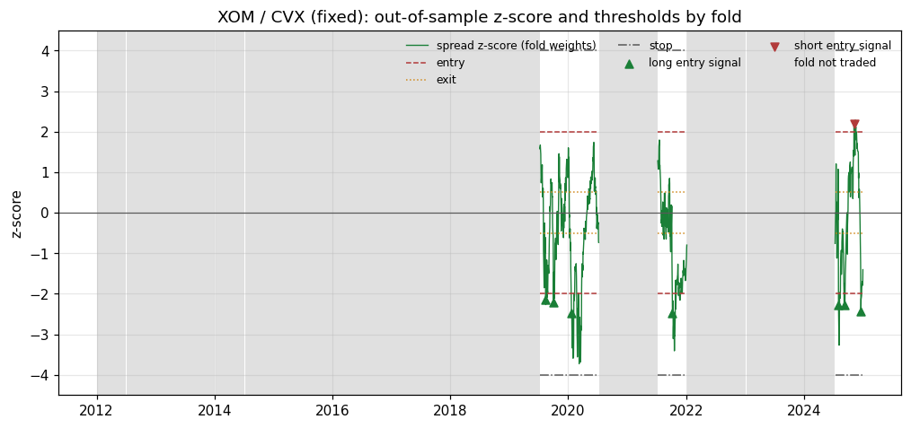
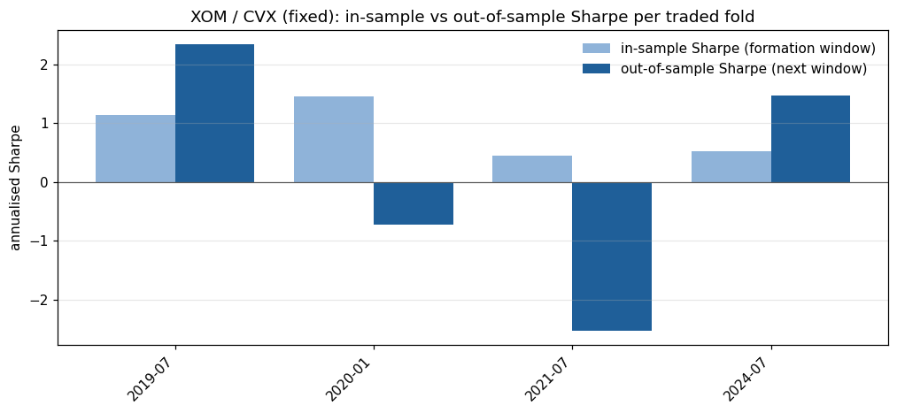

XOM / CVX: walk-forward fixed run
Out-of-sample Sharpe -0.07 (95% block-bootstrap interval -0.64 to 0.53), probabilistic Sharpe ratio 0.394. The result is not statistically distinguishable from zero skill at the 95% level. Only 8 closed round trips, so per-trade statistics are imprecise.
Headline statistics (out-of-sample only)
| Out-of-sample period | 2012-01-03 to 2024-12-31 (3269 days) |
|---|---|
| Total return | -20.03% |
| CAGR | -1.71% |
| Annualised volatility | 12.49% |
| Sharpe (95% bootstrap interval) | -0.07 (-0.64 to 0.53) |
| Probabilistic Sharpe ratio | 0.394 |
| Sortino | -0.10 |
| Max drawdown (longest spell, days) | -51.82% (1245) |
| Calmar | -0.03 |
| Skewness / kurtosis of daily returns | -2.68 / 317.23 |
| Folds traded | 4 of 26 |
|---|---|
| Skipped: not cointegrated / half-life / no in-sample edge | 22 / 0 / 0 |
| Closed round trips | 8 |
| Win rate (per round trip) | 62.5% |
| Profit factor | 0.43 |
| Average trade return on equity | -2.134% |
| Average holding period | 24.8 days |
| Stop-loss exits | 0 |
| Time in market | 6.1% |
| Annual turnover (x equity) | 1.2 |
| Trading costs / borrow costs ($) | 701.53 / 95.09 |
Charts



Folds
| Fold | Trading window | Trace stat / 5% crit | Half-life (days) | Status | Entry / exit / stop / lookback | In-sample Sharpe | In-sample deflated Sharpe | OOS return | OOS Sharpe | OOS trades |
|---|---|---|---|---|---|---|---|---|---|---|
| 0 | 2012-01-03 to 2012-07-02 | 4.46 / 15.49 | 50.7 | not cointegrated (trace 4.46 <= critical 15.49) | n/a | n/a | 0.00% | n/a | 0 | |
| 1 | 2012-07-03 to 2013-01-03 | 13.96 / 15.49 | 24.2 | not cointegrated (trace 13.96 <= critical 15.49) | n/a | n/a | 0.00% | n/a | 0 | |
| 2 | 2013-01-04 to 2013-07-05 | 12.52 / 15.49 | 21.7 | not cointegrated (trace 12.52 <= critical 15.49) | n/a | n/a | 0.00% | n/a | 0 | |
| 3 | 2013-07-08 to 2014-01-03 | 6.16 / 15.49 | 38.5 | not cointegrated (trace 6.16 <= critical 15.49) | n/a | n/a | 0.00% | n/a | 0 | |
| 4 | 2014-01-06 to 2014-07-07 | 4.54 / 15.49 | 40.5 | not cointegrated (trace 4.54 <= critical 15.49) | n/a | n/a | 0.00% | n/a | 0 | |
| 5 | 2014-07-08 to 2015-01-05 | 4.51 / 15.49 | 62.2 | not cointegrated (trace 4.51 <= critical 15.49) | n/a | n/a | 0.00% | n/a | 0 | |
| 6 | 2015-01-06 to 2015-07-07 | 9.81 / 15.49 | 28.5 | not cointegrated (trace 9.81 <= critical 15.49) | n/a | n/a | 0.00% | n/a | 0 | |
| 7 | 2015-07-08 to 2016-01-05 | 5.05 / 15.49 | 50.2 | not cointegrated (trace 5.05 <= critical 15.49) | n/a | n/a | 0.00% | n/a | 0 | |
| 8 | 2016-01-06 to 2016-07-06 | 13.17 / 15.49 | 12.0 | not cointegrated (trace 13.17 <= critical 15.49) | n/a | n/a | 0.00% | n/a | 0 | |
| 9 | 2016-07-07 to 2017-01-04 | 11.11 / 15.49 | 19.3 | not cointegrated (trace 11.11 <= critical 15.49) | n/a | n/a | 0.00% | n/a | 0 | |
| 10 | 2017-01-05 to 2017-07-06 | 9.49 / 15.49 | 20.4 | not cointegrated (trace 9.49 <= critical 15.49) | n/a | n/a | 0.00% | n/a | 0 | |
| 11 | 2017-07-07 to 2018-01-04 | 7.92 / 15.49 | 29.6 | not cointegrated (trace 7.92 <= critical 15.49) | n/a | n/a | 0.00% | n/a | 0 | |
| 12 | 2018-01-05 to 2018-07-06 | 9.09 / 15.49 | 25.8 | not cointegrated (trace 9.09 <= critical 15.49) | n/a | n/a | 0.00% | n/a | 0 | |
| 13 | 2018-07-09 to 2019-01-07 | 14.89 / 15.49 | 19.8 | not cointegrated (trace 14.89 <= critical 15.49) | n/a | n/a | 0.00% | n/a | 0 | |
| 14 | 2019-01-08 to 2019-07-09 | 12.25 / 15.49 | 21.4 | not cointegrated (trace 12.25 <= critical 15.49) | n/a | n/a | 0.00% | n/a | 0 | |
| 15 | 2019-07-10 to 2020-01-07 | 19.89 / 15.49 | 24.1 | traded | 2.00 / 0.50 / 4.00 / 60 | 1.14 | 0.958 | 9.62% | 2.34 | 2 |
| 16 | 2020-01-08 to 2020-07-08 | 16.68 / 15.49 | 14.8 | traded | 2.00 / 0.50 / 4.00 / 60 | 1.46 | 0.985 | -27.87% | -0.73 | 1 |
| 17 | 2020-07-09 to 2021-01-06 | 10.89 / 15.49 | 10.7 | not cointegrated (trace 10.89 <= critical 15.49) | n/a | n/a | 0.00% | n/a | 0 | |
| 18 | 2021-01-07 to 2021-07-08 | 15.48 / 15.49 | 8.2 | not cointegrated (trace 15.48 <= critical 15.49) | n/a | n/a | 0.00% | n/a | 0 | |
| 19 | 2021-07-09 to 2022-01-05 | 19.61 / 15.49 | 6.6 | traded | 2.00 / 0.50 / 4.00 / 60 | 0.45 | 0.713 | -5.64% | -2.53 | 1 |
| 20 | 2022-01-06 to 2022-07-08 | 13.31 / 15.49 | 9.5 | not cointegrated (trace 13.31 <= critical 15.49) | n/a | n/a | 0.00% | n/a | 0 | |
| 21 | 2022-07-11 to 2023-01-06 | 3.46 / 15.49 | 72.1 | not cointegrated (trace 3.46 <= critical 15.49) | n/a | n/a | 0.00% | n/a | 0 | |
| 22 | 2023-01-09 to 2023-07-11 | 6.08 / 15.49 | 44.6 | not cointegrated (trace 6.08 <= critical 15.49) | n/a | n/a | 0.00% | n/a | 0 | |
| 23 | 2023-07-12 to 2024-01-09 | 6.38 / 15.49 | 75.9 | not cointegrated (trace 6.38 <= critical 15.49) | n/a | n/a | 0.00% | n/a | 0 | |
| 24 | 2024-01-10 to 2024-07-11 | 15.37 / 15.49 | 22.0 | not cointegrated (trace 15.37 <= critical 15.49) | n/a | n/a | 0.00% | n/a | 0 | |
| 25 | 2024-07-12 to 2024-12-31 | 17.68 / 15.49 | 17.6 | traded | 2.00 / 0.50 / 4.00 / 60 | 0.53 | 0.774 | 7.18% | 1.47 | 4 |
Transaction-cost sensitivity
Fold decisions (weights, parameters, signals) are frozen; only the per-side cost changes.
| Cost (bps per side) | Total return | Sharpe | Max drawdown |
|---|---|---|---|
| 0.0 | -19.37% | -0.07 | -51.77% |
| 5.0 | -20.03% | -0.07 | -51.82% |
| 10.0 | -20.69% | -0.08 | -51.87% |
| 20.0 | -21.99% | -0.09 | -51.97% |
Daily VaR and Expected Shortfall
| Method | Confidence | VaR | Expected shortfall |
|---|---|---|---|
| historical | 95% | -0.000% | 0.050% |
| parametric | 95% | 1.298% | 1.627% |
| cornish_fisher | 95% | -3.198% | n/a |
| historical | 99% | 0.916% | 3.995% |
| parametric | 99% | 1.834% | 2.101% |
| cornish_fisher | 99% | 59.069% | n/a |
Data provenance
| Source this run | snapshot |
|---|---|
| Snapshot file | data/snapshots/XOM_CVX_2010-01-01_2025-01-01.csv |
| Snapshot SHA-256 | a519400cbc618215439ada3d257033ef664fdc2d7c613f37a6ac1442e190b8a0 |
| Rows / first date / last date | 3774 / 2010-01-04 / 2024-12-31 |
| Dates dropped while aligning tickers | 0 |
| Downloaded (UTC) | 2026-09-11T19:17:12+00:00 |
| Daily moves above 40% (log) flagged | 0 |
Protocol
| path | config/config.yaml |
|---|---|
| sha256 | 23f85374f30bb0c83cd9b876dd88aa8d41da9055559d08ce09ebe1dd0100ae7a |
| data.snapshot_dir | data/snapshots |
| data.max_missing_fraction | 0.02 |
| walk_forward.formation_days | 504 |
| walk_forward.trading_days | 126 |
| walk_forward.significance | 0.05 |
| walk_forward.det_order | 0 |
| walk_forward.k_ar_diff | 1 |
| walk_forward.require_cointegration | True |
| walk_forward.max_half_life_days | 126 |
| strategy.entry_z | 2.0 |
| strategy.exit_z | 0.5 |
| strategy.stop_z | 4.0 |
| strategy.lookback | 60 |
| backtest.initial_capital | 100000 |
| backtest.gross_exposure | 1.0 |
| backtest.cost_bps | 5.0 |
| backtest.borrow_bps_annual | 50.0 |
| backtest.execution_lag | 1 |
| optimization.space.entry_z | 1.0, 3.0 |
| optimization.space.exit_fraction | 0.0, 0.8 |
| optimization.space.stop_offset | 0.5, 3.0 |
| optimization.space.lookback | 20, 252 |
| optimization.n_calls | 40 |
| optimization.n_initial_points | 12 |
| optimization.min_trades | 3 |
| optimization.random_state | 42 |
| reporting.cost_sensitivity_bps | 0.0, 5.0, 10.0, 20.0 |
| reporting.bootstrap_samples | 2000 |
| reporting.bootstrap_block | 20 |
| reporting.seed | 7 |
Trades
| Signal | Entry | Exit | Direction | Exit reason | Bars held | Net P&L ($) | Return on equity | Fold |
|---|---|---|---|---|---|---|---|---|
| 2019-08-14 | 2019-08-15 | 2019-09-10 | long spread | exit | 17 | 5,850.81 | 5.851% | 15 |
| 2019-10-02 | 2019-10-03 | 2019-10-23 | long spread | exit | 14 | 3,770.08 | 3.562% | 15 |
| 2020-01-21 | 2020-01-22 | 2020-04-09 | long spread | exit | 55 | -30,554.96 | -27.873% | 16 |
| 2021-10-08 | 2021-10-11 | 2022-01-05 | long spread | end_of_window | 60 | -4,458.66 | -5.639% | 19 |
| 2024-08-02 | 2024-08-05 | 2024-08-27 | long spread | exit | 16 | 2,033.05 | 2.725% | 25 |
| 2024-09-06 | 2024-09-09 | 2024-09-20 | long spread | exit | 9 | 2,401.72 | 3.134% | 25 |
| 2024-11-06 | 2024-11-07 | 2024-12-09 | short spread | exit | 21 | -123.37 | -0.156% | 25 |
| 2024-12-19 | 2024-12-20 | 2024-12-31 | long spread | end_of_window | 6 | 1,047.78 | 1.328% | 25 |
Limitations
- Baskets were chosen by the researcher from companies that exist today, so selection and survivorship bias are not controlled.
- Prices are Yahoo Finance adjusted closes. Dividend adjustment rewrites history and Yahoo revises it over time; results are pinned to the SHA-256 of the price snapshot used.
- Fills happen at the next daily close with a flat cost per side. There are no bid-ask dynamics, market impact, short-sale restrictions or borrow recalls.
- Fractional shares, no margin interest, no rebate on short proceeds, and uninvested cash earns nothing.
- Weights are frozen within each trading window, so the dollar hedge drifts as prices move.
- With few round trips the point Sharpe ratio is noisy; the bootstrap interval and PSR are the relevant evidence, and neither accounts for how many baskets or protocols a researcher tried.